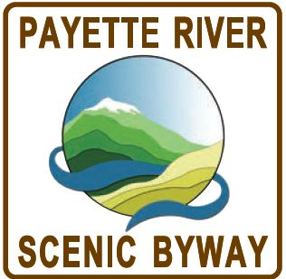

For motorists, it can be a distracting drive as the river crashes
and tumbles its way over the rocks through this narrow river valley.
Depending on where you are on the river, it can be a mild ripple or a
wild torrent. There are occasional pull-offs where you can view the
wilder parts and treat your senses to the sight, sound, smell, and
rhythm of Idaho's famous whitewater.
Along this byway are some great locations for camping, hiking, boating,
fishing, and guided float trips. Outfitters offer river excursions
that range from half-day to three-day outings in rafts or kayaks.
The mountain resort town of McCall sits next to Payette Lake and is a
great year-round getaway. It is particularly famous for the annual
Winter Carnival, when the streets are lined with ice sculptures.